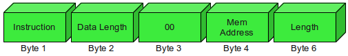
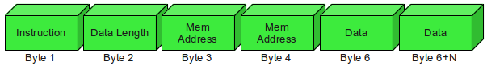

Microprocessor (Fixed Function) Smart Card Development Kit

- ACS ACOS3 Smart Card
- Gemalto GemPlus Card Reader
ACOS3 Smart Card
Manufactured by ACS as a 'flexible microprocessor' card. The ACOS3 card has 32KB of EEPROM, and initially it seemed ideal for my project. As it turns out, the card functions more as a storage medium with native functionality limited to read/write operations. These operations are performed by sending machine code instructions known as Application Protocol Data Units (APDUs) to the card.
Read operation:

Write operation:

For example, the following command:
WRITE: 11 BYTES TO 00 3Ah: HELLO WORLD
Would be sent to the card as:
91 00 3A 48 65 6C 6C 6F 20 57 6F 72 6C 64
So using the ACOS card would likely require the development of a custom application with its own hardware drivers. However, it's just about possible to script a series of actions using the g(scriptor) application, which is available for Linux.
Examples from the Manufacturer's Documentation
To perform actions with the card, I needed to consult the manufacturer's documentation.
Submit IC code: 80 20 07 00 08 41 43 4F 53 54 45 53 54
Select FF 07: 80 A4 00 00 02 FF 07
Write 4 bytes to ATR file: 80 D2 00 00 04 96 02 12 34
Get random number: 80 84 00 00 08
Create session key from random number: 80 82 00 00 10 [Eight bytes rnd num] [8 bytes rnd terminal num]
Submit PIN and code: 80 20 06 00 08 [8-byte code]
New PIN: 80 24 00 00 08 [PIN]
Get card serial number: 80 14 00 00 08
Get card revision number: 80 14 06 00 00
The last two bytes of the above two commands are status codes.
Get card EEPROM size: 80 14 05 00 00
The last byte of the response indicates the EEPROM size.
Select file: 80 A4 00 00 02 [2-byte file ID]
The Personalisation File address is 'FF 02'
The Security File is at address 'FF 03'.
The User File Management File is at address 'FF04'.
The Account File is at 'FF 05'.
References